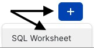

개요
반정형 데이터 처리를 집중적으로 다루는 Tasty Bytes 사용 - 제로부터 Snowflake까지 Quickstart에 오신 것을 환영합니다!
이 Quickstart에서는 VARIANT 데이터 유형, 점표기법과 래터럴 평면화를 결합하는 반정형 데이터 처리, 뷰 생성 및 Snowsight 그래프 생성으로 나눠 Snowflake에서 반정형 데이터를 처리하는 것에 대해 알아보겠습니다.
Snowflake의 반정형 데이터에 대한 상세 정보는 반정형 데이터 개요 설명서에서 확인하십시오.
사전 필요 조건 및 지식
- 시작하기 전에 평가판 계정 설정과 이 Quickstart를 완료하기 위해 필요한 Tasty Bytes 기초를 배포하는 것을 안내하는 Tasty Bytes 소개 Quickstart를 완료하십시오.
알아볼 내용
- VARIANT 데이터 유형의 정의
- 반정형 데이터를 쿼리하기 위해 점표기법 사용하기
- 반정형 데이터 평면화하기
- 배열 분석하기
- 뷰 생성하기
- Snowsight의 결과 세트에서 그래프 구축하기
구축할 것
- 엔드 투 엔드 반정형 데이터 처리
- 조정(실버) 및 분석(골드) 뷰
- 경영진을 위한 막대형 그래프
개요
이 Quickstart에서는 Snowsight SQL 워크시트를 통해 테마가 Tasty Bytes인 스토리를 따라갈 것입니다. 이 페이지에는 추가 해설, 이미지 및 설명서 링크가 포함되어 있으며 나란히 사용할 수 있는 가이드입니다.
이 섹션은 Snowflake에 로그인하고, 새로운 워크시트를 생성하고, 워크시트의 이름을 바꾸고, SQL을 GitHub에서 복사하고, 이 Quickstart에서 활용할 SQL을 붙여넣는 방법을 안내합니다.
1단계 - URL을 통해 Snowflake에 액세스
- 브라우저 창을 열고 Snowflake 계정 URL을 입력합니다.
2단계 - Snowflake에 로그인
- Snowflake 계정에 로그인합니다.

3단계 - Worksheets로 이동
- 왼쪽 탐색 메뉴에 있는 Worksheets 탭을 클릭합니다.

4단계 - 워크시트 생성
- Worksheets 내에서 Snowsight 오른쪽 상단 모서리에 있는 ‘+' 버튼을 클릭하고 ‘SQL Worksheet'를 선택합니다.
- 
5단계 - 워크시트 이름 바꾸기
- 자동으로 생성된 Timestamp 이름을 클릭하고 ‘Tasty Bytes - Semi-Structured Data'를 입력하여 워크시트의 이름을 바꿉니다.

6단계 - GitHub에서 Quickstart SQL에 액세스
- GitHub에서 호스팅된 Tasty Bytes SQL 파일과 연결된 아래 버튼을 클릭합니다.
tb_zts_semi_structured_data.sql
7단계 - GitHub에서 설정 SQL 복사
- GitHub 내에서 오른쪽으로 이동하여 ‘Copy raw contents'를 클릭합니다. 이렇게 하면 모든 필수 SQL이 클립보드로 복사됩니다.

8단계 - 설정 SQL을 GitHub에서 Snowflake 워크시트로 붙여넣기
- Snowsight 및 새롭게 생성한 워크시트로 되돌아가 방금 GitHub에서 복사한 것을 붙여넣습니다(Mac 바로 가기 키 CMD + V, Windows 바로 가기 키 CTRL + V).
9단계 - 다음 클릭 –>
개요
Tasty Bytes 데이터 엔지니어는 반정형 데이터 열이 포함된 메뉴 데이터를 프로파일링해야 합니다. 이 메뉴 테이블에서 최종 사용자에게 식사 및 재료 데이터를 노출하는 분석 계층 뷰를 생성해야 합니다.
1단계 - 콘텍스트 설정 및 테이블 쿼리
우선 다음 작업을 수행할 첫 3개의 쿼리를 함께 실행하겠습니다.
- 역할 콘텍스트를
tasty_data_engineer로 설정 - 웨어하우스 콘텍스트를
tasty_de_wh로 설정 raw_pos.menu테이블의 TOP 10개 결과 세트 생성
USE ROLE tasty_data_engineer;
USE WAREHOUSE tasty_de_wh;
SELECT TOP 10
m.truck_brand_name,
m.menu_type,
m.menu_item_name,
m.menu_item_health_metrics_obj
FROM frostbyte_tasty_bytes.raw_pos.menu m;

출력 내에서 menu_item_health_metrics_obj는 다운스트림을 제공해야 하는 지표가 포함되어 있다고 알려진 반정형 데이터여야 합니다.
이 열에서 셀 하나를 클릭하면 Snowsight는 통계 창을 자동으로 확장하여 내부 정보를 더 잘 보여줍니다.

2단계 - 반정형 열 탐색
Snowflake에 정의된 이 열을 심층적으로 알아보기 위해 menu 테이블에 있는 데이터 유형을 탐색하는 데 SHOW COLUMNS를 활용하는 다음 쿼리를 실행하십시오.
SHOW COLUMNS IN frostbyte_tasty_bytes.raw_pos.menu;

결과 세트에서는 menu_item_health_metrics_obj가 VARIANT 데이터 유형임을 확인할 수 있습니다.
3단계 - 점표기법을 사용하여 반정형 데이터 순회
menu_item_health_metrics_obj 열에 menu_item_id가 액세스해야 하는 더 중첩된 재료 및 식사 제한 데이터와 포함되어 있는 모습을 확인했습니다.
반정형 데이터를 순회하기 위해 점표기법을 활용하기 시작하는 다음 쿼리를 실행하십시오.
SELECT
m.menu_item_health_metrics_obj:menu_item_id AS menu_item_id,
m.menu_item_health_metrics_obj:menu_item_health_metrics AS menu_item_health_metrics
FROM frostbyte_tasty_bytes.raw_pos.menu m;

점표기법을 사용하면 menu_item_id를 완벽하게 성공적으로 추출할 수 있었지만, menu_item_health_metrics 열 출력에는 추가적인 반정형 객체가 아직 남아 있습니다.
또다시 자세히 살펴보기 위해 이 열에 있는 셀 하나를 클릭하겠습니다.

잘 진행하고 있습니다! 추가적인 Snowflake 함수를 사용하여 다음 섹션에서 menu_item_health_metrics를 추가적으로 처리하는 방법을 알아보겠습니다.
4단계 - 다음 클릭 –>
개요
점표기법을 사용하여 Variant 열에 있는 반정형 데이터를 얼마나 쉽게 쿼리할 수 있는지 확인했으니 Tasty Bytes 데이터 엔지니어는 내부 이해관계자가 요청한 데이터를 이들에게 제공할 수 있을 것입니다.
이 섹션에서는 요구 사항을 충족하기 위해 추가적인 반정형 데이터 처리를 수행하겠습니다.
1단계 - 래터럴 평면화 소개
다운스트림 사용자가 menu_item_health_metrics_obj 열에서 요구하는 데이터를 추가적으로 추출하려면 요청받은 첫 번째 ingredient 배열을 제공하기 위해 방금 탐색한 점표기법 기능과 Snowflakes FLATTEN 함수 및 LATERAL JOIN 기능을 활용하는 다음 쿼리를 실행하십시오.
SELECT
m.menu_item_name,
obj.value:"ingredients"::VARIANT AS ingredients
FROM frostbyte_tasty_bytes.raw_pos.menu m,
LATERAL FLATTEN (input => m.menu_item_health_metrics_obj:menu_item_health_metrics) obj;

2단계 - 배열 함수 탐색
요청받은 식사 데이터를 추출하기 전에 Snowflake 배열 함수를 중점적으로 다루는 다음 쿼리를 실행하십시오. 이 함수는 ARRAY_CONTAINS를 활용하여 상추가 포함된 모든 menu_item_name을 위해 ingredients 열을 탐색합니다.
SELECT
m.menu_item_name,
obj.value:"ingredients"::VARIANT AS ingredients
FROM frostbyte_tasty_bytes.raw_pos.menu m,
LATERAL FLATTEN (input => m.menu_item_health_metrics_obj:menu_item_health_metrics) obj
WHERE ARRAY_CONTAINS('Lettuce'::VARIANT, obj.value:"ingredients"::VARIANT);

출력에 따르면 상추가 포함된 메뉴 항목이 꽤 많습니다. 이러한 분석은 서비스를 제공하는 도시와 국가에서 음식을 회수해야 하는 상황에 공급망 조달 관리자에게 매우 유용할 것입니다.
3단계 - 대규모로 반정형 데이터 구조화
이미 조직에 제공할 수 있는 가치를 확인했으니 이제 이 섹션의 마지막 쿼리를 실행하겠습니다.
이 쿼리는 점표기법, 결합된 래터럴 조인 및 평면화 테이블 함수를 사용하여 처음에 생성해 달라고 요청받았던 결과 세트를 제공합니다.
SELECT
m.menu_item_health_metrics_obj:menu_item_id::integer AS menu_item_id,
m.menu_item_name,
obj.value:"ingredients"::VARIANT AS ingredients,
obj.value:"is_healthy_flag"::VARCHAR(1) AS is_healthy_flag,
obj.value:"is_gluten_free_flag"::VARCHAR(1) AS is_gluten_free_flag,
obj.value:"is_dairy_free_flag"::VARCHAR(1) AS is_dairy_free_flag,
obj.value:"is_nut_free_flag"::VARCHAR(1) AS is_nut_free_flag
FROM frostbyte_tasty_bytes.raw_pos.menu m,
LATERAL FLATTEN (input => m.menu_item_health_metrics_obj:menu_item_health_metrics) obj;

좋습니다! 출력이 이해관계자가 요청한 요구 사항을 정확히 충족하는 것 같습니다. 다음 섹션에서는 이 출력에 액세스할 수 있는 분석 계층으로 이를 전달하는 방법을 알아보겠습니다.
4단계 - 다음 클릭 –>
개요
마지막 섹션에서는 작업을 진행하는 동안 Snowflake 반정형 데이터 기능 세트를 사용하여 최종 사용자가 요구하는 출력을 정확히 제공하는 쿼리를 만들었습니다. 다음으로 조정을 통해 가공 전 계층으로 이 쿼리를 전달하는 프로세스를 진행하겠습니다. 결과적으로 이는 최종 사용자가 읽기 권한을 보유하고 있는 분석 계층으로 전달됩니다.
참고: 브론즈, 실버 및 골드 데이터 모델에 익숙한 사람이라면 가공 전을 브론즈, 조정을 실버, 분석을 골드로 생각하면 됩니다.
1단계 - 반정형 평면화 SQL을 사용하여 조정 뷰 생성
마지막 섹션을 끝낼 때 사용한 것과 동일한 쿼리를 사용하여 이제 이 SQL과 이미 구조화된 모든 menu 테이블 열을 포함한 다음 쿼리를 실행하십시오.
이 쿼리에서는 조정 스키마에서 CREATE VIEW를 사용하여 반정형 처리 로직과 추가 열을 테이블로 캡슐화합니다.
CREATE OR REPLACE VIEW frostbyte_tasty_bytes.harmonized.menu_v
AS
SELECT
m.menu_id,
m.menu_type_id,
m.menu_type,
m.truck_brand_name,
m.menu_item_health_metrics_obj:menu_item_id::integer AS menu_item_id,
m.menu_item_name,
m.item_category,
m.item_subcategory,
m.cost_of_goods_usd,
m.sale_price_usd,
obj.value:"ingredients"::VARIANT AS ingredients,
obj.value:"is_healthy_flag"::VARCHAR(1) AS is_healthy_flag,
obj.value:"is_gluten_free_flag"::VARCHAR(1) AS is_gluten_free_flag,
obj.value:"is_dairy_free_flag"::VARCHAR(1) AS is_dairy_free_flag,
obj.value:"is_nut_free_flag"::VARCHAR(1) AS is_nut_free_flag
FROM frostbyte_tasty_bytes.raw_pos.menu m,
LATERAL FLATTEN (input => m.menu_item_health_metrics_obj:menu_item_health_metrics) obj;

harmonized.menu_v 뷰가 생성되었으니 이제 여기에서 사용한 더 복잡한 SQL을 활용하지 않고도 이를 바로 쿼리할 수 있습니다. 하지만 이해관계자는 분석 계층에서 데이터에 액세스하기에 다음 단계에서 이를 분석 계층에 배치하겠습니다.
2단계 - 조정에서 분석으로 쉽게 전달
harmonized.menu_v를 참조하여 이제 값을 즉시 다운스트림으로 전달하기 시작하는 analytics.menu_v를 생성할 다음 쿼리를 실행하십시오.
이 쿼리에서는 아직 다루지 않은 몇 개의 새로운 함수가 등장합니다. 우선 COMMENT를 추가합니다. 이는 SHOW VIEWS 명령이나 이 뷰를 쿼리할 때 사용자가 보게 될 것을 기록하기 위한 Snowsight 인터페이스에서 확인할 수 있습니다.
또한, 쿼리 또는 뷰 정의의 복잡성을 줄여 SQL 개발자의 삶을 훨씬 더 쉽게 만들 수 있는 SELECT * EXCLUDE 및 RENAME 매개변수를 활용합니다.

3단계 - 다음 클릭 –>
개요
분석 계층에서 사용할 수 있는 메뉴 뷰를 통해 추가 사본을 만들거나 그 어떠한 복잡한 처리도 수행하지 않고 Snowflake가 반정형 데이터에 대한 관계형 쿼리 경험을 지원하는 방법을 보여주는 최종 사용자에게 제공할 것에 대해 몇 개의 쿼리를 실행하겠습니다.
1단계 - 배열 분석
이전 섹션에서 쿼리 결과로 ingredients 열을 확인했지만, 이는 이제 analytics.menu_v 뷰에서 그 어떠한 점표기법 요구 사항도 없이 제공됩니다.
이를 통해 이제 2개의 추가 Snowflake 배열 함수인 ARRAY_INTERSECTION 및 ARRAYS_OVERLAP을 활용하는 다음 쿼리를 실행하여 각 푸드 트럭 브랜드 메뉴와 겹치는 음료가 아닌 메뉴 항목이 무엇인지 확인하십시오.
SELECT
m1.menu_type,
m1.menu_item_name,
m2.menu_type AS overlap_menu_type,
m2.menu_item_name AS overlap_menu_item_name,
ARRAY_INTERSECTION(m1.ingredients, m2.ingredients) AS overlapping_ingredients
FROM frostbyte_tasty_bytes.analytics.menu_v m1
JOIN frostbyte_tasty_bytes.analytics.menu_v m2
ON m1.menu_item_id <> m2.menu_item_id -- avoid joining the same menu item to itself
AND m1.menu_type <> m2.menu_type
WHERE 1=1
AND m1.item_category <> 'Beverage' -- remove beverages
AND m2.item_category <> 'Beverage' -- remove beverages
AND ARRAYS_OVERLAP(m1.ingredients, m2.ingredients) -- evaluates to TRUE if one ingredient is in both arrays
ORDER BY m1.menu_type;

또다시 이러한 쿼리를 구축한 동일한 뷰를 사용하면 푸드 트럭 운영자가 매주 필요한 재료를 예측 및 주문하기 위한 조달 작업을 수행함에 따라 실제 비즈니스 가치를 제공할 수 있습니다.
2단계 - 경영진에 지표 제공
Tasty Bytes의 여러 브랜드에 걸쳐 현재 해결하고 있는 식사 제한에 관한 개괄적인 지표를 제공하여 Tasty Bytes 경영진이 데이터를 기반으로 메뉴에 대한 결정을 내리는 것을 돕는 방법을 알아보겠습니다.
analytics.menu_v에서 필수 지표를 집계하기 위해 COUNT, SUM 및 조건 CASE 문을 활용하는 다음 문을 실행하십시오.
SELECT
COUNT(DISTINCT menu_item_id) AS total_menu_items,
SUM(CASE WHEN is_healthy_flag = 'Y' THEN 1 ELSE 0 END) AS healthy_item_count,
SUM(CASE WHEN is_gluten_free_flag = 'Y' THEN 1 ELSE 0 END) AS gluten_free_item_count,
SUM(CASE WHEN is_dairy_free_flag = 'Y' THEN 1 ELSE 0 END) AS dairy_free_item_count,
SUM(CASE WHEN is_nut_free_flag = 'Y' THEN 1 ELSE 0 END) AS nut_free_item_count
FROM frostbyte_tasty_bytes.analytics.menu_v m;

방금 수신한 출력을 통해 반정형 데이터가 포함된 가공 전 테이블에서 단일 집계 행으로 성공적으로 변환했습니다. 이 행은 더 많은 데이터를 기반으로 한 결정을 내릴 수 있도록 Tasty Bytes를 지원하기 위해 조직 내 모두가 쉽게 액세스할 수 있습니다.
3단계 - 결과를 그래프로 변환
일부 Tasty Bytes 경영진은 데이터의 시각적 표현을 선호하기에 이제 표 기반 결과를 Snowsight 내에서 이해하기 쉬운 시각적 그래프로 얼마나 쉽게 만들 수 있는지 알아보겠습니다.
앞서 실행한 SQL에 트럭 브랜드 이름 3개에 대한 필터를 추가하는 다음 쿼리를 실행하십시오.
SELECT
m.brand_name,
SUM(CASE WHEN is_gluten_free_flag = 'Y' THEN 1 ELSE 0 END) AS gluten_free_item_count,
SUM(CASE WHEN is_dairy_free_flag = 'Y' THEN 1 ELSE 0 END) AS dairy_free_item_count,
SUM(CASE WHEN is_nut_free_flag = 'Y' THEN 1 ELSE 0 END) AS nut_free_item_count
FROM frostbyte_tasty_bytes.analytics.menu_v m
WHERE m.brand_name IN ('Plant Palace', 'Peking Truck','Revenge of the Curds')
GROUP BY m.brand_name;

기본값으로 Snowsight는 쿼리 결과를 표 기반 형식으로 반환합니다. 하지만 아직 다루지 않은 Snowsight의 강력한 기능인 그래프 사용이 있습니다.
이제 아래 스크린샷에 있는 화살표를 따라 각기 다른 푸드 트럭 브랜드가 특정 식사 제한을 해결하기 위해 제공하는 메뉴 항목을 비교하는 막대형 그래프를 생성하십시오.

이 Quickstart를 완료하면서 Tasty Bytes 경영진이 스스로 이러한 분석을 수행하는 것이 얼마나 쉬운지 강조하고 싶습니다. 경영진은 구축한 뷰에 캡슐화한 반정형 데이터 처리에 대해 아무것도 알 필요가 없습니다. 이렇게 Tasty Bytes 조직에서 데이터 민주화를 촉진하는 것을 도왔습니다.
4단계 - 다음 클릭 –>
결론
훌륭합니다! Tasty Bytes - 제로부터 Snowflake까지 - 반정형 데이터 Quickstart를 성공적으로 완료하셨습니다.
이를 완료하면서 진행한 내용은 다음과 같습니다.
- VARIANT 데이터 유형의 정의 학습
- 반정형 데이터를 쿼리하기 위해 점표기법 사용
- 반정형 데이터 평면화
- 배열 분석
- 2개의 뷰 생성
- Snowsight의 결과 세트에서 그래프 구축
이 Quickstart를 다시 실행하려면 관련 워크시트 하단에 있는 초기화 스크립트를 활용하십시오.
다음 단계
Snowflake 데이터 클라우드에서의 여정을 계속하려면 이제 아래 링크를 방문하여 사용 가능한 모든 Tasty Bytes 활용 - Quickstart를 확인하십시오.